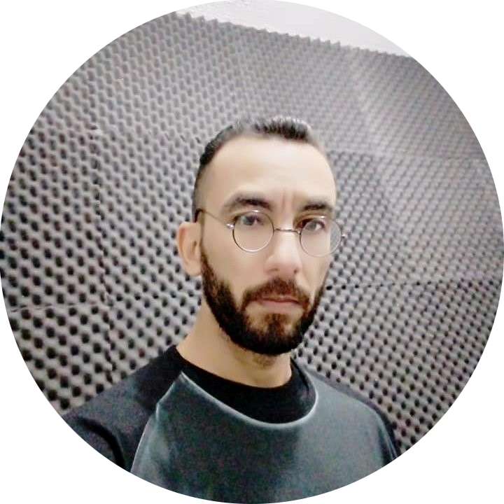

Curriculo

Marcelo Moreira de Almeida
Programador Full-Stack
marcelomdea@gmail.com
linkedin.com/marcelo-moreira-de-almeida
Formação Acadêmica
- Tecnólogo em Análise e Projeto de Sistemas (Fundação Educacional de Andradina)
- Tecnico em Informática com enfase em Análise e Projeto de Sistemas (ETEC Sebastina Augusta de Moraes)
Experiência Profissional
- Programador Full-Stack Projeto www.escolaplay.com.br
- Programador Full-Stack Projeto www.monitorinfo.com.br
- Monitor de Informática - Funcionário Publico Municipal/Secretaria de Educação
- Auxiliar Administrativo de Controle de qualidade - JBS/Friboi
Habilidades e competências
- Programador Full-Stack Java
- Programador Full-Stack Golang
- Programador Full-Stack Flutter
Cursos
- Analista de Teste de Software - ultima.school
- Desenvolvimento de aplicações de grande porte - FullCycle
- Prosissão: Ciêntista de dados - ebeconline.com.br